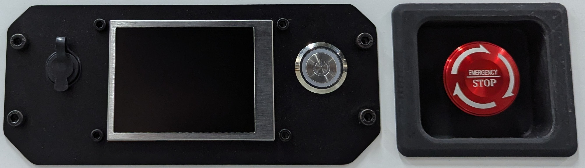
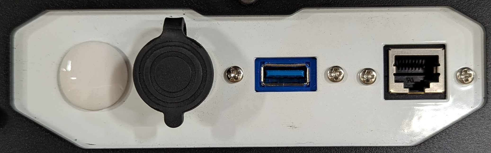
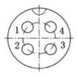
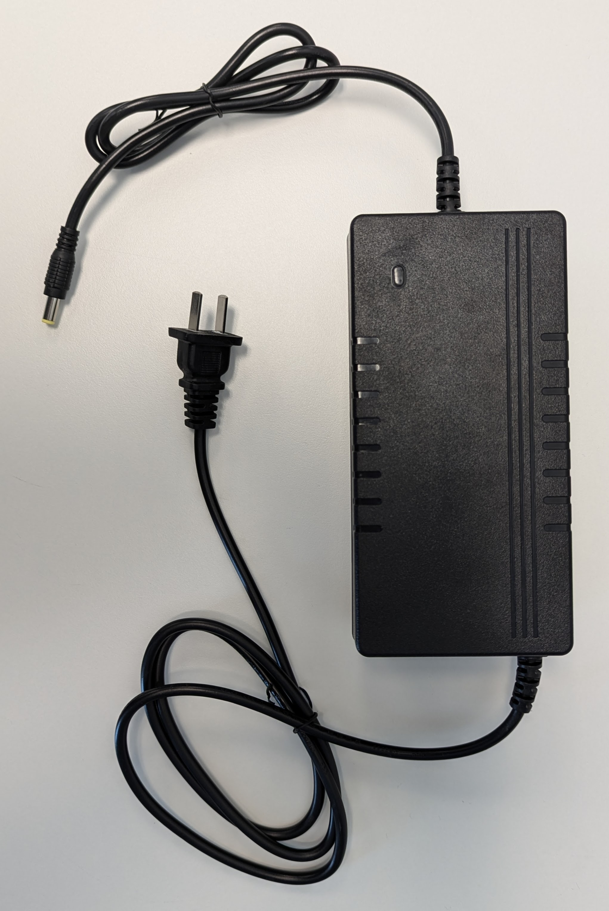

Basic Usage
Rear Interface Panel
Interfaces from the left:
- Charger Port
- Screen
- Power Button
- Emergency Stop Button
Top Interface Panel
Interfaces from the left:
Unused
Power Breakout
 Pin Description 1 VBat (19V-29V) 5A 2 GND 3 12V 2A 4 GND Serial
RJ45 (Unused)
Plug-In Charger
The SLATE base comes with a plug-in battery charger with the following specifications:
- ~110VAC 60Hz On
- 24VDC - 29.4VDC Out
- 5A
- 160W
To charge the SLATE base’s battery with the plug-in charger, plug the charger’s barrel jack into the base’s Charger Port. See the Rear Interface Panel for details on the port.
While charging, the plug-in charger’s LED will be red. When fully charged or disconnected, the plug-in charger’s LED will be green.